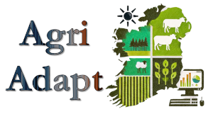

Modelling major vectors of barley yellow dwarf virus in current and future climate scenarios
People: Blake Corrigan, Stephen Byrne (Teagasc), Louise McNamara (Teagasc), Jon Yearsley (UCD)
Project description
Aphids are ubiquitous crop pests that can cause significant yield losses in economically important cereals. The grain aphid (Sitobion avenae) is one of the most economically important pests of cereal crops internationally, and is the major vector of Barley/Cereal yellow dwarf virus (B/CYDV) in Ireland, with yield losses ranging from 5% to 80%.
This project is part of the DAFM funded AgriAdapt project; a collaboration between Teagasc, UCD and Dundalk Institute of Technology. AgriAdapt is focussed on developing strategies for Irish agriculture to adapt to the challenges posed by climate change.
This modelling project has three specific tasks:
- To predict the optimal timing of insecticide spraying in current climate
- To predict aphid and virus pressure in changing climate
- To link aphid and viral loads with landscape features
This project will collaborate with the AIMING project (being led by Dr. Louise McNamara and Dr. Stephen Byrne, Teagasc) which is generating data to support the development of aphid risk analysis models in a changing climate of this project.

Task 1: Optimal timing of insecticide spraying in current climate
This task gives the foundation of a decision support tool that provides growers with guidance on when to spray their crops in order to control the incidence of virus. The model builds upon the existing aphid population dynamic model (e.g. Duffy et al 2017), which typically use air temperature data to predict the timing and abundance of the grain aphid (Sitobion avenae) populations on a crop of winter wheat. This baseline model will be developed for a crop of winter barley and spring barley. We will then include the dynamics of Barley/Cereal Yellow Dwarf virus (B/CYDV) epidemics to this baseline model. This development will be guided by previous modelling approaches for different aphid species (e.g. aphid-virus models for Mediterranean climates (Thackray et al, 2009)).
Task 2: Aphid and virus pressure in changing climate
This task uses the models developed in Task 1 to investigate how aphid and virus pressure on crops is predicted to change from the present to 2030, 2050 and 2100. For this we will use regional climate simulations for Ireland from the TRANSLATE project under current and optimistic representative concentration pathway.
Task 3: Aphid and virus pressure in changing climate
This task focuses upon spatial patterns in grain aphid and virus occurrence and the ability of landscape features at different spatial scales to predict occurrences of grain aphid and virus. Summaries of the spatial patterns in both aphid and virus occurrence will be produced. The approach will follow work such as Damgaard et al (2019). Semivariograms will indicate the scale of spatial autocorrelation. This information will add to the spatial reliability analysis of Task 1 and feed into the spatial distribution modelling. Provided the data have sufficient sample size, temporal changes in spatial autocorrelation throughout the year will be analysed.
Publications
Funding
This work is funded by the Department of Agriculture, Food and Marine (DAFM).